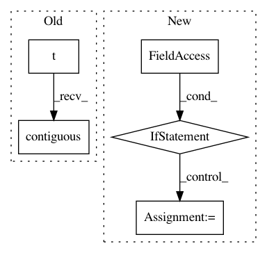

a584d6f73cfafa81c9e872ae6e9beb2feff32574,OpenNMT/onmt/Dataset.py,Dataset,__getitem__,#Dataset#Any#,23
Before Change
def __getitem__(self, index):
srcBatch = self._batchify(
self.src[index*self.batchSize:(index+1)*self.batchSize]).t().contiguous()
tgtBatch = self._batchify(
self.tgt[index*self.batchSize:(index+1)*self.batchSize]).t().contiguous()
return srcBatch, tgtBatch
def __len__(self):
After Change
tgtBatch = self._batchify(
self.tgt[index*self.batchSize:(index+1)*self.batchSize])
if self.cuda:
srcBatch = srcBatch.cuda()
tgtBatch = tgtBatch.cuda()
// FIXME
srcBatch = srcBatch.t().contiguous()
tgtBatch = tgtBatch.t().contiguous()
return srcBatch, tgtBatch
In pattern: SUPERPATTERN
Frequency: 3
Non-data size: 5
Instances
Project Name: OpenNMT/OpenNMT-py
Commit Name: a584d6f73cfafa81c9e872ae6e9beb2feff32574
Time: 2016-12-28
Author: alerer@fb.com
File Name: OpenNMT/onmt/Dataset.py
Class Name: Dataset
Method Name: __getitem__
Project Name: OpenNMT/OpenNMT-py
Commit Name: c751a1dd8a724388437916e9d29653c45fc4f14f
Time: 2017-02-22
Author: alerer@fb.com
File Name: onmt/Dataset.py
Class Name: Dataset
Method Name: __getitem__
Project Name: OpenNMT/OpenNMT-py
Commit Name: d88d3777c2b5c8c6471720252bca4c1987e6366e
Time: 2017-02-22
Author: alerer@fb.com
File Name: OpenNMT/onmt/Dataset.py
Class Name: Dataset
Method Name: __getitem__